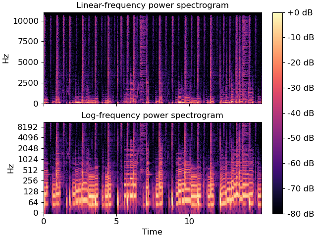

librosa.display.specshow¶
-
librosa.display.specshow(data, x_coords=None, y_coords=None, x_axis=None, y_axis=None, sr=22050, hop_length=512, fmin=None, fmax=None, tuning=0.0, bins_per_octave=12, key='C:maj', ax=None, **kwargs)[source]¶ Display a spectrogram/chromagram/cqt/etc.
For a detailed overview of this function, see Using display.specshow
- Parameters
- datanp.ndarray [shape=(d, n)]
Matrix to display (e.g., spectrogram)
- srnumber > 0 [scalar]
Sample rate used to determine time scale in x-axis.
- hop_lengthint > 0 [scalar]
Hop length, also used to determine time scale in x-axis
- x_axis, y_axisNone or str
Range for the x- and y-axes.
Valid types are:
None, ‘none’, or ‘off’ : no axis decoration is displayed.
Frequency types:
‘linear’, ‘fft’, ‘hz’ : frequency range is determined by the FFT window and sampling rate.
‘log’ : the spectrum is displayed on a log scale.
‘mel’ : frequencies are determined by the mel scale.
‘cqt_hz’ : frequencies are determined by the CQT scale.
‘cqt_note’ : pitches are determined by the CQT scale.
All frequency types are plotted in units of Hz.
Any spectrogram parameters (hop_length, sr, bins_per_octave, etc.) used to generate the input data should also be provided when calling
specshow.Categorical types:
‘chroma’ : pitches are determined by the chroma filters. Pitch classes are arranged at integer locations (0-11).
‘tonnetz’ : axes are labeled by Tonnetz dimensions (0-5)
‘frames’ : markers are shown as frame counts.
Time types:
- ‘time’markers are shown as milliseconds, seconds, minutes, or hours.
Values are plotted in units of seconds.
‘s’ : markers are shown as seconds.
‘ms’ : markers are shown as milliseconds.
‘lag’ : like time, but past the halfway point counts as negative values.
‘lag_s’ : same as lag, but in seconds.
‘lag_ms’ : same as lag, but in milliseconds.
Rhythm:
- ‘tempo’markers are shown as beats-per-minute (BPM)
using a logarithmic scale. This is useful for visualizing the outputs of feature.tempogram.
- ‘fourier_tempo’same as ‘tempo’, but used when
tempograms are calculated in the Frequency domain using feature.fourier_tempogram.
- x_coords, y_coordsnp.ndarray [shape=data.shape[0 or 1]+1]
Optional positioning coordinates of the input data. These can be use to explicitly set the location of each element
data[i, j], e.g., for displaying beat-synchronous features in natural time coordinates.If not provided, they are inferred from
x_axisandy_axis.- fminfloat > 0 [scalar] or None
Frequency of the lowest spectrogram bin. Used for Mel and CQT scales.
If
y_axisis cqt_hz or cqt_note andfminis not given, it is set by default tonote_to_hz('C1').- fmaxfloat > 0 [scalar] or None
Used for setting the Mel frequency scales
- tuningfloat
Tuning deviation from A440, in fractions of a bin.
This is used for CQT frequency scales, so that
fminis adjusted tofmin * 2**(tuning / bins_per_octave).- bins_per_octaveint > 0 [scalar]
Number of bins per octave. Used for CQT frequency scale.
- keystr
The reference key to use when using note axes (cqt_note, chroma).
- axmatplotlib.axes.Axes or None
Axes to plot on instead of the default plt.gca().
- kwargsadditional keyword arguments
Arguments passed through to
matplotlib.pyplot.pcolormesh.By default, the following options are set:
rasterized=Trueshading='flat'edgecolors='None'
- Returns
- colormesh
matplotlib.collections.QuadMesh The color mesh object produced by
matplotlib.pyplot.pcolormesh
- colormesh
See also
cmapAutomatic colormap detection
matplotlib.pyplot.pcolormesh
Examples
Visualize an STFT power spectrum using default parameters
>>> import matplotlib.pyplot as plt >>> y, sr = librosa.load(librosa.ex('choice'), duration=15) >>> fig, ax = plt.subplots(nrows=2, ncols=1, sharex=True) >>> D = librosa.amplitude_to_db(np.abs(librosa.stft(y)), ref=np.max) >>> img = librosa.display.specshow(D, y_axis='linear', x_axis='time', ... sr=sr, ax=ax[0]) >>> ax[0].set(title='Linear-frequency power spectrogram') >>> ax[0].label_outer()
Or on a logarithmic scale, and using a larger hop
>>> hop_length = 1024 >>> D = librosa.amplitude_to_db(np.abs(librosa.stft(y, hop_length=hop_length)), ... ref=np.max) >>> librosa.display.specshow(D, y_axis='log', sr=sr, hop_length=hop_length, ... x_axis='time', ax=ax[1]) >>> ax[1].set(title='Log-frequency power spectrogram') >>> ax[1].label_outer() >>> fig.colorbar(img, ax=ax, format="%+2.f dB")
